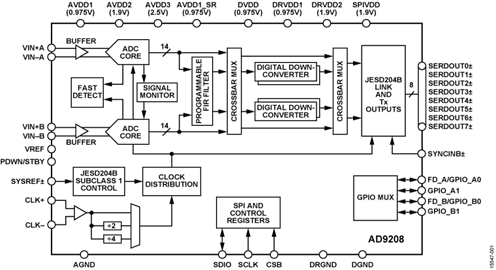

AD9208 ADC Linux Driver¶
This driver is used in conjunction with the AXI ADC HDL Linux Driver
Supported Devices¶
Supported Boards¶
This driver supports the
Supported HDL Cores¶
Description¶
The AD9208 is a dual, 14-bit, 3 GSPS analog-to-digital converter (ADC). The device has an on-chip buffer and a sample-and-hold circuit designed for low power, small size, and ease of use. This product is designed to support communications applications capable of direct sampling wide bandwidth analog signals of up to 5 GHz. The −3 dB bandwidth of the ADC input is 9 GHz. The AD9208 is optimized for wide input bandwidth, high sampling rate, excellent linearity, and low power in a small package.
The dual ADC cores feature a multistage, differential pipelined architecture with integrated output error correction logic. Each ADC features wide bandwidth inputs supporting a variety of user-selectable input ranges. An integrated voltage reference eases design considerations. The analog input and clock signals are differential inputs. The ADC data outputs are internally connected to four digital downconverters (DDCs) through a crossbar mux. Each DDC consists of up to five cascaded signal processing stages: a 48-bit frequency translator (numerically controlled oscillator (NCO)), and up to four half-band decimation filters. The NCO has the option to select preset bands over the general-purpose input/output (GPIO) pins, which enables the selection of up to three bands. Operation of the AD9208 between the DDC modes is selectable via SPI-programmable profiles. In addition to the DDC blocks, the AD9208 has several functions that simplify the automatic gain control (AGC) function in a communications receiver. The programmable threshold detector allows monitoring of the incoming signal power using the fast detect control bits in Register 0x0245 of the ADC. If the input signal level exceeds the programmable threshold, the fast detect indicator goes high. Because this threshold indicator has low latency, the user can quickly turn down the system gain to avoid an overrange condition at the ADC input. In addition to the fast detect outputs, the AD9208 also offers signal monitoring capability. The signal monitoring block provides additional information about the signal being digitized by the ADC. The user can configure the Subclasss 1 JESD204B-based high speed serialized output in a variety of one-lane, two-lane, four-lane, and eight-lane configurations, depending on the DDC configuration and the acceptable lane rate of the receiving logic device. Multidevice synchronization is supported through the SYSREF± and SYNCINB± input pins. The AD9208 has flexible power-down options that allow significant power savings when desired. All of these features can be programmed using a 3-wire serial port interface (SPI). This product is protected by a U.S. patent.
Source Code¶
Status¶
| Source | Mainlined? |
|---|---|
| drivers/iio/adc/ad9208.c | WIP |
Files¶
| Function | File |
|---|---|
| driver | drivers/iio/adc/ad9208.c |
| API driver | drivers/iio/adc/ad9208 |
| core driver | drivers/iio/adc/cf_axi_adc_core.c |
| core driver | drivers/iio/adc/cf_axi_adc_ring_stream.c |
| core include | drivers/iio/adc/cf_axi_adc.h |
| Documentation | adi,ad9208.txt |
Example device trees
| Function | File |
|---|---|
| dtsi | adi-dual-ad9208.dtsi |
| dts | vcu118_dual_ad9208.dts |
| dts | zynqmp-zcu102-rev10-ad9208.dts |
Example devicetree SPI device initialization¶
Analog Devices AD9208 (and similar) JESD204B Analog-to-Digital Converter (ADC)
Required properties:
compatible: Must be one of “adi,ad9208”, “adi,ad9208x2”
reg: SPI chip select number for the device
#address-cells: Must be set to 1
#size-cells: Must be set to 0
clocks: define reference clock See Documentation/devicetree/bindings/clock/clock-bindings.txt
clock-names: See Documentation/devicetree/bindings/clock/clock-bindings.txt
spi-max-frequency: See Documentation/devicetree/bindings/spi/spi-bus.txt
spi-cpha: See Documentation/devicetree/bindings/spi/spi-bus.txt
spi-cpol: See Documentation/devicetree/bindings/spi/spi-bus.txt
adi,sampling-frequency: Initial ADC sampling frequency in Hz.
adi,octets-per-frame: Number of octets per frame (F).
adi,frames-per-multiframe: Number of frames per multi-frame (K).
adi,high-density: If specified the JESD204B link is configured for high density (HD) operation.
adi,converter-resolution: Converter resolution (N).
adi,bits-per-sample: Number of bits per sample (N’).
adi,converters-per-device: Number of converter per device (M).
adi,control-bits-per-sample: Number of control bits per conversion sample (CS).
adi,lanes-per-device: Number of lanes per link (L).
adi,subclass: The JESD204B subclass.
Optional properties:
adi,powerdown-pin-enable: Enables the Powerdown Pin
adi,powerdown-mode: Controls the function of the Powerdown Pin.
2 = Standby Status,
3 = Powerdown Status.
adi,input-clock-divider-ratio: The desired CLK input divider setting. Valid values are 1, 2 and 4.
adi,duty-cycle-stabilizer-enable: Enables the clock input duty cycle stabilizer.
adi,analog-input-dc-coupling-enable: Enables DC coupling, default is AC.
adi,external-vref-enable: Enables the external reference mode.
adi,analog-input-neg-buffer-current: The negative input buffer current.
adi,analog-input-pos-buffer-current: The positive input buffer current.
adi,sysref-lmfc-offset: LMFC offset. Delays the LMFC in frame clock increments.
adi,sysref-edge-high-low-enable: Set the transition edge on which SYSREF is valid.
adi,sysref-clk-edge-falling-enable: Set the Sysref Capture clock Edge.
adi,sysref-neg-window-skew: Negative window skew, sample clock by which captured sysref is ignored. Skew set in clock cycles. Valid range 0-3.
adi,sysref-pos-window-skew: Positive window skew, sample clock by which captured sysref is ignored. Skew set in clock cycles. Valid range 0-3.
adi,sysref-mode: Sysref Synchronization Mode.
0 = No Sysref,
1 = continuous sysref synchronisation,
2 = one-shot mode.
adi,sysref-nshot-ignore-count: Number of initial sysref sgnals to ignore in sysref n-shot mode 0-15. Valid only for N-Shot Mode.
adi,ddc-channel-number: Set ADC operational mode number of DDC channels.
0 = Full Bandwidth mode,
1 = One Channel,
2 = Two Channel,
4 = Four Channel.
adi,ddc-complex-to-real-enable: Enables Real DDS output format. Defaut is Complex.
adi,ddc-mixer-real-enable: Enables Real DDS input format. Defaut is Complex.
adi,decimation: ADC decimation rate. This value configures the ADC decimation mode based on the desired ADC sampling rate (Fs) and the desired output sample rate (Fout). Fs/Fout. DCM rate shall be set to the lowest Channel DCM value. Range 1-48.
adi,nco-mode-select: Set DDC frequency translation Mode. Each DDC Channel supports an NCO for frequency translation. This value enables or disables the NCO to achieve Variable IF mode (NCO enabled) or Zero IF Mode (NCO disabled). Alternatively there a test mode may be enabled where the NCO directly injects a ramp into the signal path.
0 = Variable IF Mode,
1 = Zero IF Mode,
2 = Test Mode.
adi,nco-channel-carrier-frequency-hz: Set NCO channel carrier frequency in Hz for frquency translation.
adi,nco-channel-phase-offset: Set NCO Phase Offset.
adi,ddc-gain-6dB-enable: Each DDC Channel contains an independently controlled gain stage. Either 0dB or 6dB gain can be applied.
fastdetect-a-gpio: a GPIO spec for the Fastdetect-A pin.
fastdetect-a-gpio: a GPIO spec for the Fastdetect-B pin.
powerdown-gpio: a GPIO spec for the Powerdown pin.
Example:
&spi0 {
status = "okay";
adc0_ad9208: ad9208@1 {
compatible = "adi,ad9208x2";
spi-cpol;
spi-cpha;
spi-max-frequency = <10000000>;
reg = <1>;
clocks = <&axi_ad9208_0_jesd_rx>, <&hmc7044 2>;
clock-names = "jesd_adc_clk", "adc_clk";
adi,powerdown-mode = <AD9208_PDN_MODE_POWERDOWN>;
adi,sampling-frequency = /bits/ 64 <3000000000>;
adi,input-clock-divider-ratio = <1>;
adi,duty-cycle-stabilizer-enable;
adi,analog-input-neg-buffer-current = <AD9208_BUFF_CURR_600_UA>;
adi,analog-input-pos-buffer-current = <AD9208_BUFF_CURR_600_UA>;
adi,sysref-lmfc-offset = <0>;
adi,sysref-pos-window-skew = <0>;
adi,sysref-neg-window-skew = <0>;
adi,sysref-mode = <AD9208_SYSREF_ONESHOT>;
adi,sysref-nshot-ignore-count = <15>;
/* JESD204 parameters */
adi,octets-per-frame = <1>;
adi,frames-per-multiframe = <32>;
adi,converter-resolution = <16>;
adi,bits-per-sample = <16>;
adi,converters-per-device = <2>;
adi,control-bits-per-sample = <0>;
adi,lanes-per-device = <8>;
adi,subclass = <1>;
/* DDC setup */
adi,ddc-channel-number = <AD9208_FULL_BANDWIDTH_MODE>;
#address-cells = <1>;
#size-cells = <0>;
ad9208_0_ddc0: channel@0 { /* Ignored in AD9208_FULL_BANDWIDTH_MODE */
reg = <0>;
adi,decimation = <2>;
adi,nco-mode-select = <AD9208_NCO_MODE_VIF>;
adi,nco-channel-carrier-frequency-hz = /bits/ 64 <70000000>;
adi,nco-channel-phase-offset = /bits/ 64 <0>;
adi,ddc-gain-6dB-enable;
};
};
};
AD9680 Example Using: JESD204 (FSM) Interface Linux Kernel Framework
adc0_ad9680: ad9680@2 {
#address-cells = <1>;
#size-cells = <0>;
compatible = "adi,ad9680";
reg = <2>;
spi-cpol;
spi-cpha;
spi-max-frequency = <1000000>;
clocks = <&clk0_ad9523 13>;
clock-names = "adc_clk";
/* jesd204-fsm support */
jesd204-device;
#jesd204-cells = <2>;
jesd204-top-device = <0>; /* This is the TOP device */
jesd204-link-ids = <0>;
jesd204-inputs = <&axi_ad9680_core 0 0>;
adi,powerdown-mode = <AD9208_PDN_MODE_POWERDOWN>;
adi,sampling-frequency = /bits/ 64 <1000000000>;
adi,input-clock-divider-ratio = <1>;
adi,sysref-lmfc-offset = <0>;
adi,sysref-pos-window-skew = <0>;
adi,sysref-neg-window-skew = <0>;
adi,sysref-mode = <AD9208_SYSREF_CONT>;
adi,sysref-nshot-ignore-count = <0>;
/* JESD204 parameters */
adi,converters-per-device = <2>; /* JESD204 (M) */
adi,lanes-per-device = <4>; /* JESD204 (L) */
adi,octets-per-frame = <1>; /* JESD204 (F) */
adi,frames-per-multiframe = <32>; /* JESD204 (K) */
adi,converter-resolution = <14>; /* JESD204 (N) */
adi,bits-per-sample = <16>; /* JESD204 (N') */
adi,control-bits-per-sample = <2>; /* JESD204 (CS) */
adi,subclass = <1>; /* JESD204 (SUBCLASSV) */
/* DDC setup */
adi,ddc-channel-number = <AD9208_FULL_BANDWIDTH_MODE>;
ad9208_ddc0: channel@0 {
reg = <0>;
adi,decimation = <2>;
adi,nco-mode-select = <AD9208_NCO_MODE_VIF>;
adi,nco-channel-carrier-frequency-hz = /bits/ 64 <70000000>;
adi,nco-channel-phase-offset = /bits/ 64 <0>;
};
};
Enabling Linux driver support¶
Configure kernel with “make menuconfig” (alternatively use “make xconfig” or “make qconfig”)
Note
The AD9208 driver depends on CONFIG_SPI
Adding Linux driver support¶
Configure kernel with “make menuconfig” (alternatively use “make xconfig” or “make qconfig”)
Linux Kernel Configuration
Device Drivers --->
<*> Industrial I/O support --->
--- Industrial I/O support
-*- Enable ring buffer support within IIO
-*- Industrial I/O lock free software ring
-*- Enable triggered sampling support
*** Analog to digital converters ***
[--snip--]
-*- Analog Devices High-Speed AXI ADC driver core
<*> Analog Devices AD9208 and similar high speed ADCs
[--snip--]
Hardware configuration¶
In case the driver probes and the device instantiates without errors. Your systems kernel messages should include some lines, which may look like the one shown below.
Hint
This specifies the root console running on the target
axi_adxcvr 44a60000.axi-adxcvr-rx: AXI-ADXCVR-RX (17.01.a) using GTY4 at 0x44A60000 mapped to 0xb0110000. Number of lanes: 8.
axi_adxcvr 44b60000.axi-adxcvr-rx: AXI-ADXCVR-RX (17.01.a) using GTY4 at 0x44B60000 mapped to 0xb0330000. Number of lanes: 8.
ad9208 spi0.1: AD9208 PLL LOCKED
ad9208 spi0.1: AD9208 DUAL (MASTER with DMA) Rev. 3 Grade 0 (API 1.0.1) probed
ad9208 spi0.2: AD9208 PLL LOCKED
ad9208 spi0.2: AD9208 Rev. 3 Grade 0 (API 1.0.1) probed
iio_dmaengine_buffer_alloc:227 width 0 (DMA width >= 256-bits ?)
cf_axi_adc 44a10000.axi-ad9208-0-hpc: ADI AIM (10.01.b) at 0x44A10000 mapped to 0xb0101000, probed ADC AD9208 DUAL (MASTER with DMA) as MASTER
cf_axi_adc 44b10000.axi-ad9208-1-hpc: ADI AIM (10.01.b) at 0x44B10000 mapped to 0xb010b000, probed ADC AD9208 as MASTER
AD9680 using: JESD204 (FSM) Interface Linux Kernel Framework
Hint
This specifies the root console running on the target
axi_adxcvr 44a50000.axi-adxcvr-rx: AXI-ADXCVR-RX (17.05.a) using QPLL on GTX2 at 0x44A50000. Number of lanes: 4.
axi-jesd204-rx 44aa0000.axi-jesd204-rx: AXI-JESD204-RX (1.07.a) at 0x44AA0000. Encoder 8b10b, width 4/4, lanes 4, jesd204-fsm.
ad9208 spi0.2: ad9680 PLL LOCKED
ad9208 spi0.2: ad9680 Rev. 2 Grade 10 (API 1.0.1) probed
cf_axi_adc 44a10000.axi-ad9680-hpc: ADI AIM (10.01.b) at 0x44A10000 mapped to 0x7d3c02c1, probed ADC AD9680 as MASTER
jesd204: /axi/spi@e0006000/ad9680@2,jesd204:1,parent=spi0.2: JESD204[0] transition initialized -> probed
jesd204: /axi/spi@e0006000/ad9680@2,jesd204:1,parent=spi0.2: JESD204[0] transition probed -> idle
jesd204: /axi/spi@e0006000/ad9680@2,jesd204:1,parent=spi0.2: JESD204[0] transition idle -> device_init
jesd204: /axi/spi@e0006000/ad9680@2,jesd204:1,parent=spi0.2: JESD204[0] transition device_init -> link_init
jesd204: /axi/spi@e0006000/ad9680@2,jesd204:1,parent=spi0.2: JESD204[0] transition link_init -> link_supported
jesd204: /axi/spi@e0006000/ad9680@2,jesd204:1,parent=spi0.2: JESD204[0] transition link_supported -> link_pre_setup
jesd204: /axi/spi@e0006000/ad9680@2,jesd204:1,parent=spi0.2: JESD204[0] transition link_pre_setup -> clk_sync_stage1
jesd204: /axi/spi@e0006000/ad9680@2,jesd204:1,parent=spi0.2: JESD204[0] transition clk_sync_stage1 -> clk_sync_stage2
jesd204: /axi/spi@e0006000/ad9680@2,jesd204:1,parent=spi0.2: JESD204[0] transition clk_sync_stage2 -> clk_sync_stage3
jesd204: /axi/spi@e0006000/ad9680@2,jesd204:1,parent=spi0.2: JESD204[0] transition clk_sync_stage3 -> link_setup
jesd204: /axi/spi@e0006000/ad9680@2,jesd204:1,parent=spi0.2: JESD204[0] transition link_setup -> opt_setup_stage1
jesd204: /axi/spi@e0006000/ad9680@2,jesd204:1,parent=spi0.2: JESD204[0] transition opt_setup_stage1 -> opt_setup_stage2
jesd204: /axi/spi@e0006000/ad9680@2,jesd204:1,parent=spi0.2: JESD204[0] transition opt_setup_stage2 -> opt_setup_stage3
jesd204: /axi/spi@e0006000/ad9680@2,jesd204:1,parent=spi0.2: JESD204[0] transition opt_setup_stage3 -> opt_setup_stage4
jesd204: /axi/spi@e0006000/ad9680@2,jesd204:1,parent=spi0.2: JESD204[0] transition opt_setup_stage4 -> opt_setup_stage5
jesd204: /axi/spi@e0006000/ad9680@2,jesd204:1,parent=spi0.2: JESD204[0] transition opt_setup_stage5 -> clocks_enable
jesd204: /axi/spi@e0006000/ad9680@2,jesd204:1,parent=spi0.2: JESD204[0] transition clocks_enable -> link_enable
jesd204: /axi/spi@e0006000/ad9680@2,jesd204:1,parent=spi0.2: JESD204[0] transition link_enable -> link_running
jesd204: /axi/spi@e0006000/ad9680@2,jesd204:1,parent=spi0.2: JESD204[0] transition link_running -> opt_post_running_stage
Driver testing¶
Some device attributes control the ADC HDL Core, others features of the ADC and associated clock providers.
Note
Hint
This specifies any shell prompt running on the target
analog:/sys/bus/iio/devices/iio:device1# **cd /sys/bus/iio/devices/**
root@analog:/sys/bus/iio/devices# **ls**
iio:device0 iio:device1 iio:device2
root@analog:/sys/bus/iio/devices#
root@analog:/sys/bus/iio/devices# **cd iio:device1**
root@analog:/sys/bus/iio/devices/iio:device1# **ls -l**
total 0
drwxr-xr-x 5 root root 0 Jan 1 00:00 .
drwxr-xr-x 3 root root 0 Jan 1 00:00 ..
drwxr-xr-x 2 root root 0 Jan 1 00:00 buffer
-r--r--r-- 1 root root 4096 Jan 1 00:00 dev
drwxr-xr-x 2 root root 0 Jan 1 00:00 events
-rw-r--r-- 1 root root 4096 Jan 1 00:00 in_voltage0_test_mode
-rw-r--r-- 1 root root 4096 Jan 1 00:00 in_voltage1_test_mode
-rw-r--r-- 1 root root 4096 Jan 1 00:00 in_voltage_dc_filter_enable
-rw-r--r-- 1 root root 4096 Jan 1 00:00 in_voltage_sampling_frequency
-rw-r--r-- 1 root root 4096 Jan 1 00:00 in_voltage_scale
-r--r--r-- 1 root root 4096 Jan 1 00:00 in_voltage_scale_available
-r--r--r-- 1 root root 4096 Jan 1 00:00 in_voltage_test_mode_available
-r--r--r-- 1 root root 4096 Jan 1 00:00 name
lrwxrwxrwx 1 root root 0 Jan 1 00:00 of_node -> ../../../../../firmware/devicetree/base/amba_pl/axi-ad9208-0-hpc@44a10000
drwxr-xr-x 2 root root 0 Jan 1 00:00 scan_elements
lrwxrwxrwx 1 root root 0 Jan 1 00:00 subsystem -> ../../../../../bus/iio
-rw-r--r-- 1 root root 4096 Jan 1 00:00 uevent
root@analog:/sys/bus/iio/devices/iio:device1#
Documentation for IIO device the subfolders, device and channel attributes can be found here: AXI ADC HDL Linux Driver
Show device name
Note
Hint
This specifies any shell prompt running on the target
root@analog:/sys/bus/iio/devices/iio:device1# **cat name**
**axi-ad9208-0-hpc**